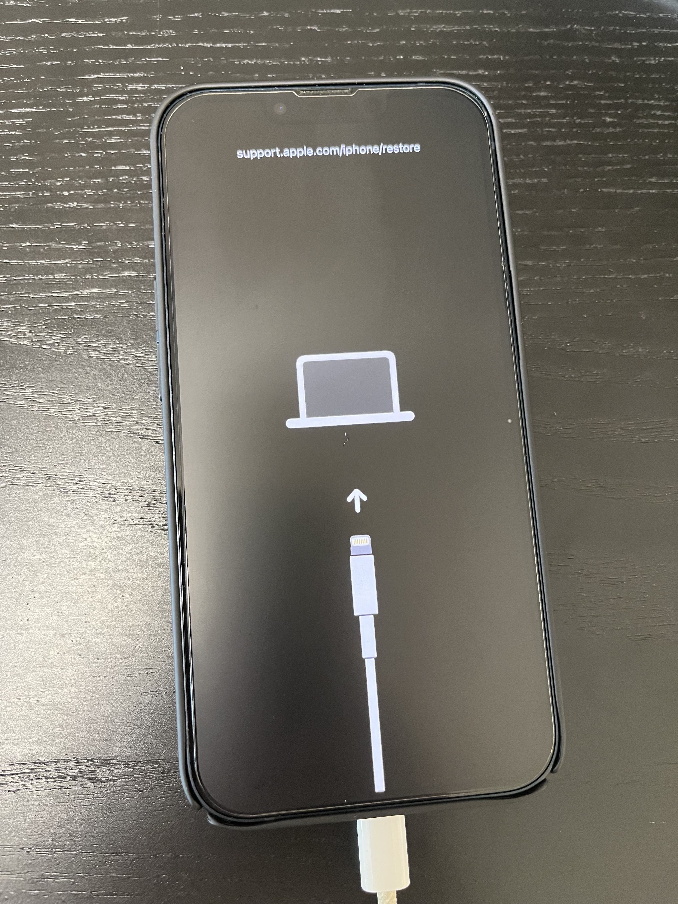
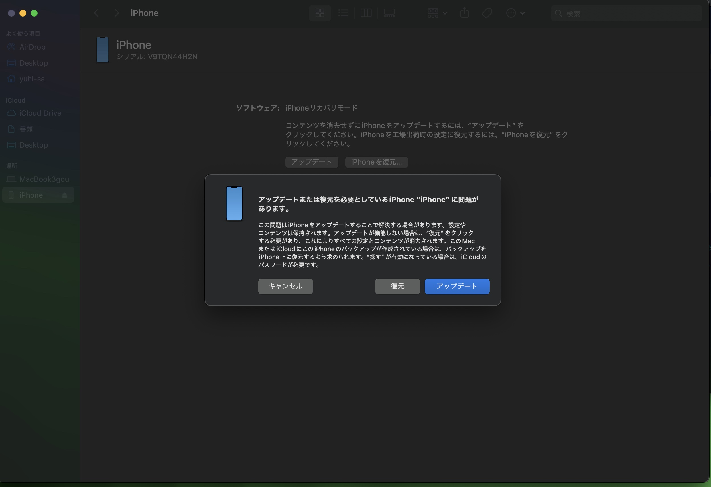

ios17 Developer Betaにアップグレードしたiphone13をios16に戻す
ベータアップデートをオフにする
設定>一般>ソフトウェアアップデートからベータアップデートをオフにする。
リカバリーモードにする
- mac bookとケーブルで接続する。
- iphoneの音量↑ボタンを押した後、音量↓ボタンを押す。
- すぐに電源ボタンを長押しする。電源が切れappleのロゴが出るまで長押しする。
iphoneはこのような画面。  macはこのような画面となる。 
macから復元
上記の画面になったら、mac上から復元を選択する。
これで、再インストールすることができる。
通常のiphoneの初期設定
工場出荷時の状態となるため、通常の初期設定をiphoneで実施する。 この時ios17時点でのバックアップから復元することはできないため、1から設定をし直す必要がある。
Tags: